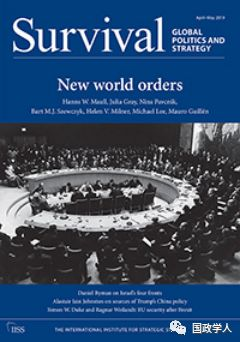
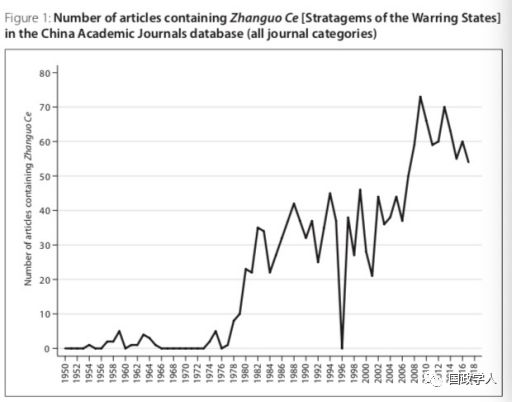
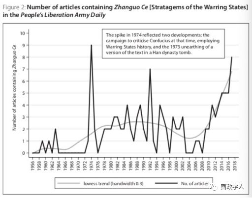

收录于合集

内容简介
【 作者 】 Alastair lain Johnston: 江忆恩，美国哈佛大学政府系教授，被誉为“美国新生代中最出色的中国问题专家”。江忆恩的研究领域集中于社会化理论、身份与政治行为、战略文化等，其代表作有《社会国家：中国与国际体系1980－2000》、《文化现实主义：中国历史中的战略文化与大战略》。
【 编译 】 蔡 ****宇
【 来源 】Survival, 61:2,pp.189-202；Published online: 19 Mar 2019
【 期刊简介 】Survival杂志是英国国际事务研究院国际战略研究所主办的国际问题研究学术期刊，该杂志是国际关系和战略研究领域的领先期刊，关注对于国际安全与战略问题的批判与反思。Survival杂志为双月刊，每年6期，2017年影响因子达1.090，在国际关系类86本期刊中排名36，在政治科学类165本期刊中排名82。
【 校对 】刘瑛琛
【 审核 】李 源

Alastair Iain Johnston
文章摘要
本文对迈克尔·白邦瑞所著的《百年马拉松》一书提出四点批评。第一， 该书认为“百年马拉松”计划源于新中国建国之初，而作者指出这一结论来源于白邦瑞对刘明福著作的片面解读。第二，该书认为中国鹰派深受战国时期的大战略思想的影响，作者指出其夸大了中国古代军事思想与20世纪50年代初新中国对外战略的联系。第三，该书认为中国学者与媒体长期将美国“妖魔化”为敌人或竞争对手，而作者指出中国的对美报道在大多数情况下都是积极中立的。最后，本文认为，无论是“百年马拉松”的时间表，还是中国领导人快速完成秘密计划的决策都是不存在的。总而言之，笔者认为，尽管中美竞争无可避免，但《百年马拉松》一书中的错误观点，既可能导致特朗普政府对华政策的误判，也可能使中美合作之路变得更加艰难。
文章内容
引言
据报道，迈克尔·白邦瑞的《百年马拉松》一书对美国总统唐纳德.特朗普及其政府的对华政策产生了重要影响。特朗普政府前高级顾问史蒂夫·K·班农甚至表示，该书是特朗普政府高级官员对华认知的“知识结构”，它间接推动了特朗普当局实行“对抗模式”的对华政策。鉴于该书的重大影响力，本文重新审视了白邦瑞《百年马拉松》一书中的关键章节，揭示了该书在分析与论证中的问题。
第一部分 秘密计划
《百年马拉松》的第一章——“中国梦：洗刷百年耻辱”，是全书论证的起点。作者批评了该章节的观点与论述，认为白邦瑞既对大跃进时代“赶英超美”的历史语境缺乏了解，又存在观点引证的谬误。
首先作者认为，白邦瑞不了解 “大跃进”时代的历史背景，将“赶英超美”的政治口号误认为“百年秘密计划”。在《百年马拉松》的第一章中，白邦瑞引用了刘明福的著作《中国梦：后美国时代的大国思维与战略定位》，他写道：“刘明福大校暗示中国领导人中存在官方的马拉松战略，他称赞毛泽东‘大胆制定超越美国的大计划’，并声称‘击败美国将是中国对人类最大的贡献’。”然而，这一观点实际上来源于英国学者威廉·卡拉汉，白邦瑞只是间接引用了威廉·卡拉汉与西方媒体对刘明福大校观点的评论，并未忠于书本的原意。所谓的“大计划”原指“大跃进”时期中国在经济上“赶英超美”的口号，并非在地缘政治上挑战美国的秘密计划。
其次作者指出，白邦瑞先入为主地把20世纪民族复兴的中国梦，与“大跃进”时代“赶英超美”的政治口号相混淆，这是对刘明福大校观点的误解。第一，无论在人民日报的社论，还是公开发行的《毛泽东选集》中，“赶英超美”的经济口号都没有所谓的秘密性。第二，从语境上分析，白邦瑞曲解了刘明福大校著作中，“中国的百年梦想”的内涵。刘明福书中的第一章题为“‘世界第一’：中国的百年梦想”，这里的“中国的百年梦想”指的是1900-2000年这一百年来，孙中山、毛泽东、邓小平等中国领导人对中国崛起，民族复兴的历史思考，并不是白邦瑞所称1950年来毛泽东提出的“赶英超美”的“大战略”。
因此，作者认为白邦瑞的第一章中试图论证的“官方”的“百年马拉松”计划起源于新中国成立之初的观点偏离事实，甚至可能是以讹传讹。
第二部分 保持计划的秘密性
《百年马拉松》的第三章“战国时代”写道，“马拉松计划”来源于中国战国时代的历史启示，其本质是中国的“鹰派”对战国时期战略思想的当代运用。为此作者批评道，白邦瑞过度强调了战国历史对20世纪50年代中国外交政策的影响。他对军方思维方式的揣测也缺乏依据。
第一，作者指出毛泽东在1936-1938年写作的主要军事著作中，极少引用《孙子兵法》的内容。就算是以研究战国思想见长的郭化若将军，也认为孙子“不战而屈人之兵”等思想是不切实际的。第二，由于新中国建国之初警惕封建反动势力，战国时代的古籍长期被冷落，更难以对现实决策产生影响。对战国历史的系统研究大体随着1980年日本、香港“孙子学”研究热潮的兴盛才东山再起。为印证这一观点，作者统计了20世纪50年代以来中国学术期刊和《解放军日报》中包含“战国策”的文章数量，如图所示：


第三部分 妖魔化敌人
《百年马拉松》一书中的第五章：“万恶的美国——中国历史教科书中的美国”中，白邦瑞提出一个重要论点，即“百年马拉松”战略的重要前提，是中国的媒体与学者频繁抹黑美国政府。在他看来，“中国的鹰派已经成功说服中国领导人，将美国视为其必须取代的邪恶霸权”。作者批评指出，在对这一观点的论述中，白邦瑞的引证存在较大的主观偏向性。
作者举出了三个白邦瑞片面引证的例子。第一，为了说明中国学者有意抹黑美国的形象，白邦瑞在引用中国历史学者评价富兰克林·罗斯福的学术文章时，有意删去了客观中性的判断，营造出中国在二战后仇视美国的印象；第二，为了论述中国媒体长期抹黑美国，白邦瑞以个人在华参加中美经济与安全座谈会的主观感受加以论述。而事实上，中国的对美报道是相对积极中立的，中国的对美舆论往往只在两国关系紧张时期出现起伏。第三，白邦瑞认为，中国领导人声称尼克松访华的目的是激起中苏核战争，但原作中引用的文献却无法支持其观点。
第四部分 修订过的计划？
最后，作者指出《百年马拉松》的第十章“警钟响起”中的逻辑矛盾。按照白邦瑞的观点，中国的鹰派从古代的计谋中受到启发，计划用一百年的时间取代美国的地位，那为什么中国在百年大计完成之前，就急于向外界揭示这一计划？
为了回答这一质疑，白邦瑞解释称：中国领导人与学者们普遍认为，中美权力转移的“大势”将加速到来。因此，中国领导人转变了维持现状与不称霸的外交政策，这预示着中国将提早十到二十年完成“百年马拉松”的时间表。
然而，为了支撑这一假设，白邦瑞曲解了学者袁鹏的论述以支持其观点，但原作者的真实意思是中国追赶美国仍需时日。作者指出，白邦瑞的解释缺乏论据支撑，是站不住脚的。
结语
总而言之，作者认为《百年马拉松》一书的核心论点：“‘百年马拉松’是新中国成立以来中国的秘密计划”，是基于大量二手资料的错误解读，缺乏确凿的事实证据基础。作者指出，尽管中美竞争可能无法避免，但是鉴于该书对白宫高级官员和美国舆论的重大影响力，对中美关系的发展可能产生两方面负面影响：第一，该论调可能使中美两国在贸易、气候变化、全球卫生、经济发展、防止核扩散等领域的紧密合作变得日益艰难；第二，该书可能使美国政府对中国外交政策的动机产生错误认知，使中美关系面临更多不确定性。
** 扫描下方小程序码查看原文p df**
本文由国政学人微信公众平台编译首发
更多阅读
【地区秩序】阿米塔夫·阿查亚：权力转移还是范式变化？中国崛起与亚洲新兴安全秩序 | 国政学人
国政学人 （ID：guozhengxueren)
为方便学人及时阅读高质量文章
别忘把国政学人设置 星标 哦~